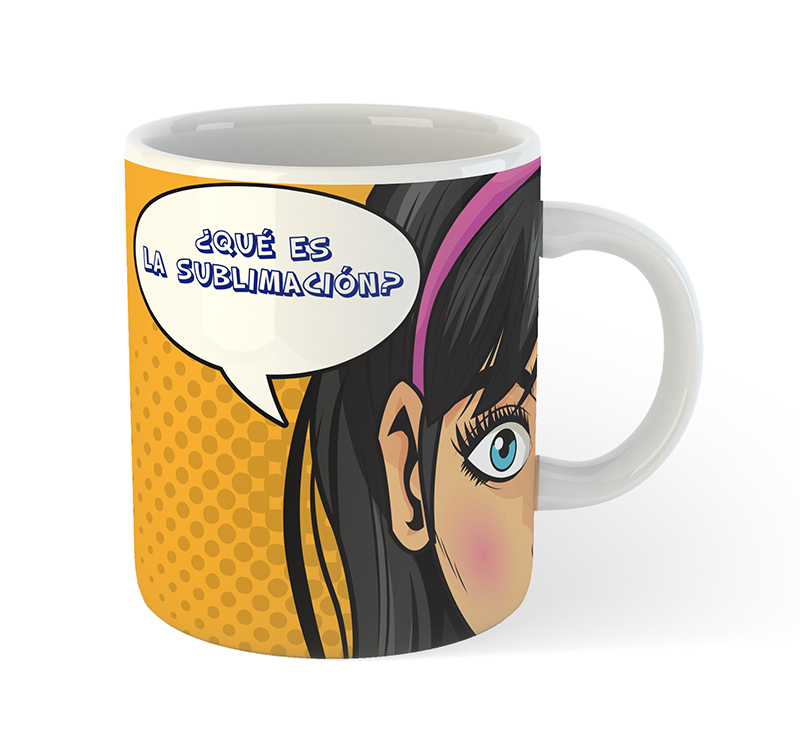

¿Qué es sublimación textil.?
Se define como sublimación al acto y consecuencia de sublimar (es decir, pasar de forma directa del estado sólido al de vapor. Hacer que la materia pase del estado sólido al gaseoso, sin pasar en ningún momento por el estado líquido, es la acción de sublimar. Lo que llamamos sublimación textil es una técnica que se utiliza mayoritariamente para personalizar o imprimir prendas blancas de poliéster 100%. Es el sistema de impresión ideal para las prendas técnicas ya que permite la transpiración.El calor normalmente se aplica con una prensa o plancha térmica. La impresión se realiza utilizando unas tintas especiales en impresoras inkjet o láser . El calor cambia la impresión que se ha hecho en el papel a un gas, el cual penetra la superficie del polimer o poliéster. Se puede hacer de forma muy rápida a partir de cantidades pequeñas. Permite una reproducción casi fotográfica sin aumentar costes.